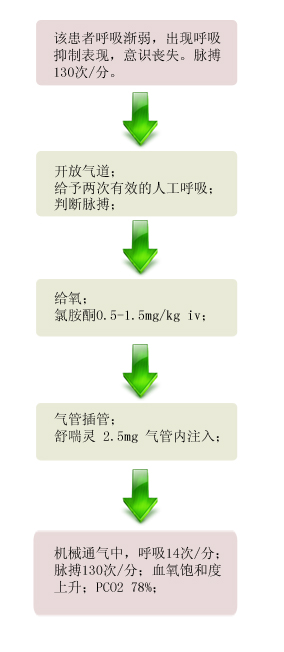

【病例摘要】
- 现病史：男性，19岁，运动后突发喘息、气急2小时。患者于2小时前剧烈运动后突发喘息、气急、胸闷，自行使用沙丁胺醇气雾剂，无明显缓解。
- 既往史：既往有支气管哮喘病史15年，每月发作7-8次，经治疗可缓解。有青霉素过敏史。对花粉、蟹过敏。
- 查体：T37.5℃, P 125次/分，R 40次/分，BP 90/60mmHg，端坐位，面容焦虑，大汗，口唇紫绀，三凹征明显，胸廓饱满，两肺可闻及散在响亮的哮鸣音。

【辅助检查】
- 动脉血气分析:

【诊断】
- 支气管哮喘急性重度发作
【事件】
